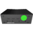

Node information
- Name:
- Thalatta
- ID:
- SN 1244229-503
- KChief version
- v. 5.23.1
- Connection:
-
 Online >_ Remote access
Hardware
- Manufacturer:
- DELL
- Model:
- Embedded box acrylic PC 5000
- Processor
- Intel® Core™ i7
- Memory
- 32GB (2x16G) 2400MHz DDR4
- Video Controller
- Integrated Graphics (v2 CPU Board and v2 Carrier Board)